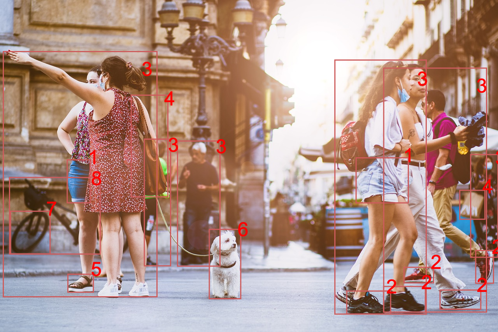

الرؤية الحاسوبية
اِخْتَرْ صورة

منظر لمدينة
| التسمية | نسبة الثقة |
| مدينة | 100% |
| سروال قصير 1 | 99% |
| حذاء 2 | 99% |
| شخص 3 | 99% |
| حقيبة | 97% |
| حقيبة يد 4 | 96% |
| صندل 5 | 90% |
| التسمية | نسبة الثقة |
| كلب 6 | 90% |
| حيوان أليف | 86% |
| عجلة 7 | 85% |
| دراجة 8 | 80% |
| سيارة | 78% |
| عمود إنارة | 75% |
| حبل | 60% |
موقع بناء

| التسمية | نسبة الثقة |
| شخص 1 | 100% |
| خوذة 2 | 100% |
| مبنى 3 | 76% |
| شخص بالغ 4 | 99% |
| ذَكَر 5 | 99% |
| التسمية | نسبة الثقة |
| شاحنة 6 | 88% |
| حذاء 7 | 88% |
| عجلة 8 | 83% |
| نظارة واقية | 94% |
| لافتة تحذير | 31% |
فواكه وخضراوات

| التسمية | نسبة الثقة |
| موز 1 | 100% |
| فاكهة | 100% |
| برتقال 2 | 85% |
| كمثرى 3 | 84% |
| دجاج 4 | 78% |
| ليمون أصفر | 62% |
| تفاح 5 | 50% |
| التسمية | نسبة الثقة |
| سلة | 55% |
| جريب فروت | 53% |
| فلفل | 53% |
| ليمون أخضر | 52% |
| كُوسَة | 52% |
| زنجبيل | 51% |
| أفوكادو | 51% |